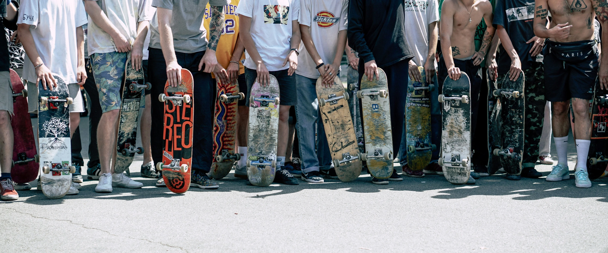

Почитать ещё


10 мин
мифы о мире скейтбординга
Развеиваем мифы о скейтбординге. Что правда, а что — фигня?

5 мин
стили катания: street, park, vert, bowl
Какой стиль скейтбординга выбрать? Разбираемся по полочкам.
Коммьюнити
7 мин
Культура командных тренировок
Команда на тренировке: как поддержка друзей улучшает катание.